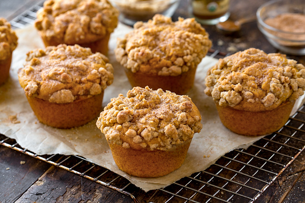
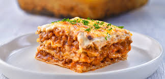
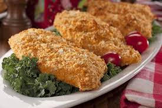

Pumpkin Muffins
Weight Watchers Muffins - 2 point each! They taste like pumpkin pie!
Lasagna
From Weight Watchers Magazine
Unfried Chicken
A delicious 'unfried' chicken recipe,that is so simple,and tastes so good that you won't believe that it's only 6 Ww points per serving.Also good for those watching their cholesterol levels!